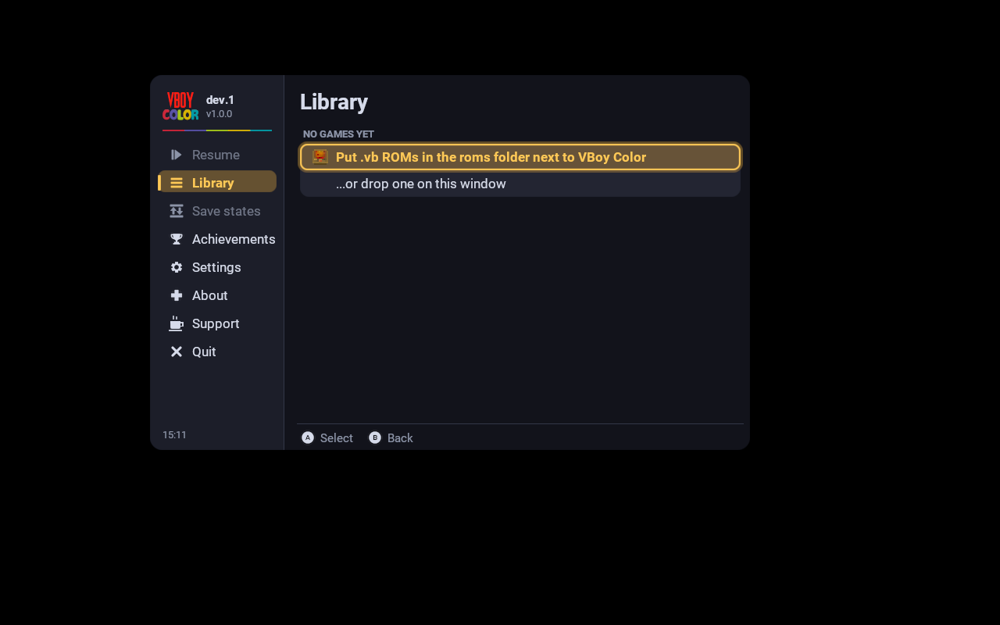

VBoyColor build running under Vulkan (llvmpipe) — library menu rendered in-window. No ROMs bundled; drop a .vb file you dumped yourself onto the window to play.Color, four ways
- Auto — per-tile / per-depth coloring, zero setup
- Multicolor — one color per Virtual Boy shade
- Gradient — brightness-mapped palettes
- Tint — classic red, or any mix
17 hand-painted .vbcp color packs built in (Wario Land, Mario Tennis, Teleroboxer, …).
Real 3D
Quest: one picture per eye. On PC / phones: side-by-side, top-bottom, or anaglyph glasses (red/cyan, green/magenta, amber/blue via Dubois).
Desktop build (this worker)
Cloned yuk27/VBoyColor, submodules init, configured with CMake + Ninja, built target VBoyColor (5.3 MB ELF x86-64).
Run: VBoyColor/build-pc/VBoyColor — needs Vulkan 1.1 (Mesa lavapipe works) and a display. ROMs go in roms/.
Controls
| Virtual Boy | Keyboard | Gamepad |
|---|---|---|
| Left D-pad | Arrow keys | D-pad / left stick |
| Right D-pad | W A S D | Right stick |
| A / B | X / Z | B / A (VB positions) |
| L / R | Q / E | LB / RB |
| Start / Select | Enter / Backspace | Start / Back |
Menu: Tab or Esc. Fullscreen: Alt+Enter. Save F2, load F4, screenshot F12.
Project layout
VBoyColor/ — full emulator source (CMake root). core/ shared app, platform/pc2d/ desktop entry, shaders/, colorpacks/, third_party/beetle-vb-libretro. This page is the static preview served from dist/ for browser validation.